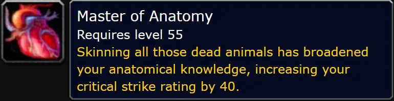

WotLK Warmane Icecrown - Skinning 1 to 450 (x3) and Bonuses
Master of Anatomy, where to skin at each level and trainers.
Skinning Bonus
Master of Anatomy (Skinning Passive)
-
Effect: +40 Critical Strike Rating
-
Unlocked at: 450 Skinning
-
Type: Passive (always active)
-
Scales with: Skinning skill level

Leveling 1-450
Classic
| Level | Beast level | Zone |
|---|---|---|
| Learn Apprentice Skinning in Elwynn Forest | ||
| 1-73 | 5-10 | Elwynn Forest |
| Learn Journeyman Skinning in Elwynn Forest at 50 | ||
| 73-110 | 10-17 | Westfall |
| 110-125 | 20-21 | Duskwood |
| Learn Expert Skinning in Stormwind at 125 | ||
| 125-170 | 21-26 | Duskwood |
| 170-223 | 30-44 | Stranglethorn Vale |
| Learn Artisan Skinning in Dalaran and take the portal to Cavern of Time at 200 | ||
| 223-265 | 45-49 | Tanaris |
| 265-300 | 50-55 | Un’Goro Crater |
TBC
| Level | Herbs | Zone |
|---|---|---|
| Learn Master Skinning in Dalaran, Hellfire Peninsula or Shattrath at 275 | ||
| 300-330 | 60-63 | Hellfire Peninsula |
| 330-351 | 63-66 | Nagrand |
WotLK
| Level | Herbs | Zone |
|---|---|---|
| Learn Skinning in Dalaran or in Valliance Keep at 350 | ||
| 351-396 | 68-71 | Borean Tundra |
| 396-450 | 75-77 | Sholazar Basin |
Skinning Trainers
| Horde | Alliance | Neutral |
|---|---|---|
Eastern Kingdoms (Up to Artisan) Rand Rhobart – Tirisfal Glades Killian Hagey – Undercity Kalimdor (Up to Artisan) Kulleg Stonehorn – Feralas Yonn Deepcut – Mulgore Kil’Hiwana Drang – The Barrens Malux – Desolace Thuwd – Orgrimmar Mooranta – Thunder Bluff Outland (Up to Master) Moorutu – Hellfire Peninsula Northrend (Up to Grand Master) Roberta Jacks – Howling Fjord Tiponi Stormwhisper – Borean Tundra |
Eastern Kingdoms (Up to Artisan) Wilma Ranthal – Redridge Mountains Helene Peltskinner – Elwynn Forest Maris Granger – Stormwind City Balthus Stoneflayer – Ironforge Kalimdor (Up to Artisan) Jayla – Ashenvale Eladriel – Darnassus Androl Oakhand – Teldrassil Radnaal Maneweaver – Teldrassil Outland (Up to Master) Jelena Nightsky – Hellfire Peninsula Northrend (Up to Grand Master) Frederic Burrhus – Howling Fjord Trapper Jack – Borean Tundra |
Outland (Up to Master) Seymour – Shattrath Northrend (Up to Grand Master) Derik Marks – Dalaran |
Source
https://www.warcrafttavern.com/wotlk/guides/skinning-guide-1-450/